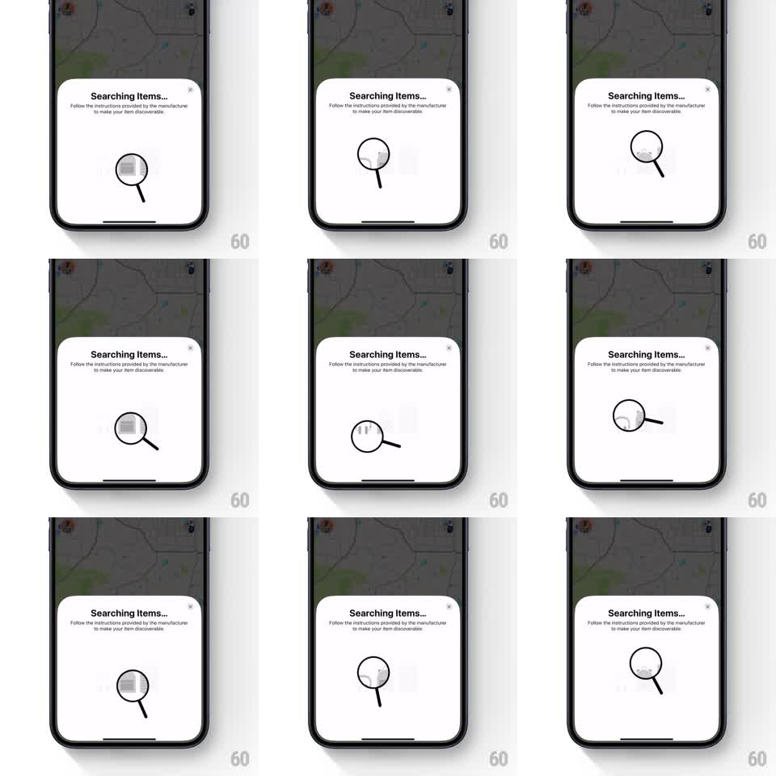

Media
Frame-by-frame

Rebuild this animation 1:1: Apple Find My's third-party item pairing sheet - a magnifying glass orbits over a slowly sliding strip of faint item icons, enlarging each one as it passes over it.

Rebuild this animation 1:1: Apple Find My's third-party item pairing sheet - a magnifying glass orbits over a slowly sliding strip of faint item icons, enlarging each one as it passes over it. ## Integration Integration: stack-agnostic spec - springs given as stiffness/damping, timed motions as duration + curve; map every value to your framework and animation library of choice. ## Scene Dimmed map with a bottom sheet: "Searching Items..." title, instruction copy, close button, and a wide illustration stage holding a horizontal strip of ghosted product icons (keyboard, earbuds, tags) with a magnifying glass on top. ## Motion spec Pattern: scanning magnifier loop, ~4s. - The icon strip slides horizontally at a constant slow speed (~30px/s), wrapping seamlessly. - The magnifying glass drifts along an elliptical path over the strip (~4s period, ease-in-out), tilting +-10deg as it travels. - Whatever icon sits under the lens renders sharp and ~1.6x larger inside the lens circle; everything outside stays at 30% opacity. - The title's ellipsis cycles one, two, three dots on a 1.2s loop. ## Calibration - The lens magnification must be clipped to the lens circle with a slight refraction feel - a whole-icon scale-up that escapes the rim breaks the illusion. - The glass path and strip speed are independent; the pairing of lens to icon should feel coincidental, not synced. ## Reduced motion Static strip with the lens parked over one sharp icon. ## Don't miss - The glass casts a faint soft shadow on the strip so it reads as hovering above it. - Icons never stop sliding, even under the lens - the strip's constancy is what the scan plays against.